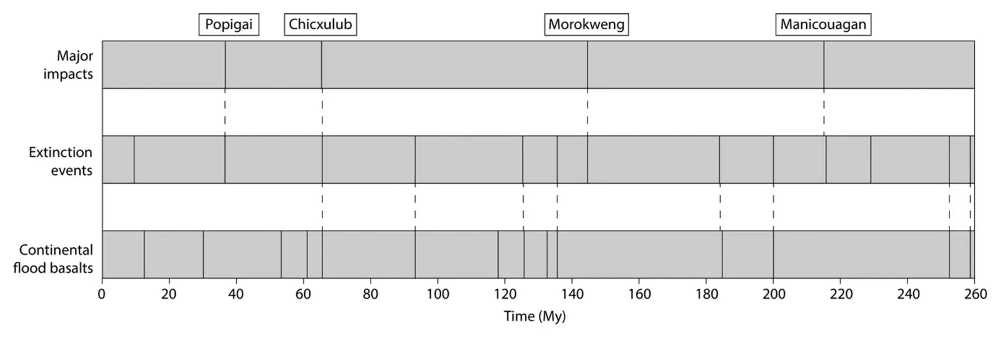

Cycles of ~32.5 My and ~26.2 My in correlated episodes of continental flood basalts, hyper-thermal climate pulses, anoxic oceans, and mass extinctions over the last 260 My
Key finding. Circular spectral analysis finds significant underlying cycles of about 32.5 and 26.2 million years in the ages of ocean anoxic events and marine extinctions, and about 32.8 million years in the independently dated continental flood basalts, while 13 of 17 anoxic intervals carry stratigraphic mercury anomalies pointing to contemporaneous eruptions.

What question did this research address?
Flood basalt eruptions, ocean anoxic events, hyper-thermal climate intervals and mass extinctions have each been reported as periodic, and each has been linked to the others case by case. Whether they form one connected system with a shared rhythm is a different question.
This synthesis brought together the newest high-precision ages for all of them — flood basalts, anoxic intervals, marine and non-marine extinctions, hyper-thermals — plus mercury and osmium-isotope anomalies as proxies for large-scale volcanism.
What did we find?
At least 13 of 17 intervals of ocean anoxia are marked by stratigraphic mercury anomalies, and five anoxic intervals in the Cretaceous correlate with marine osmium-isotope ratios suggesting hydrothermal activity from large igneous provinces.
Nine of the anoxic intervals coincide with marine extinction episodes, and eight of those joint anoxia-extinction events are significantly correlated with well-dated flood basalt eruptions.
Seven of the marine extinctions and their associated volcanism are coeval with extinctions of non-marine vertebrates, so the crises struck land and sea together.
The spectra agree across independent records: about 32.5 and 26.2 million years in anoxia and extinction ages, about 32.8 million years and a 12.9-million-year harmonic in the flood basalt ages, with higher-frequency harmonics near 6.4, 8.4 and 9.7 million years in all three.
The proposed causal chain is chemical. Carbon dioxide and perhaps methane released from flood basalt magmas — and from intrusions into carbon-rich deposits — drove hyper-thermal intervals near or beyond lethal limits, while halogens attacked the ozone layer and the warm oceans turned acidic and anoxic to euxinic, in places up to the surface.
Impacts remain a separate, smaller contribution. Four extinctions — late Eocene, end-Cretaceous, end-Jurassic and mid-Norian — correlate with the four largest craters of at least 100 kilometres over the same period.
The authors note that the ~33 and ~26 million-year periods resemble both Milankovitch amplitude modulations and known Galactic cycles, and suggest that, contrary to conventional wisdom, the geological rhythm may be paced astronomically.
Why does it matter?
It assembles what have been separate literatures — volcanology, ocean chemistry, palaeontology, climate — into a single dated sequence, and finds one rhythm running through all of them rather than several coincidental ones.
The mercury anomalies are what raise this above correlation of dates. They are an independent chemical marker of eruption, so the volcanism and the anoxia are tied together by evidence that does not depend on the dating agreeing.
The astronomical suggestion is the most consequential and the least settled part. A pacemaker outside the Earth would mean the planet's largest biotic crises are scheduled by orbital or galactic geometry, which is a much stronger claim than internal tectonic rhythm.
Citation, data, and code
Michael R. Rampino, Ken Caldeira, and Sedelia Rodriguez (2023). Cycles of ~32.5 My and ~26.2 My in correlated episodes of continental flood basalts, hyper-thermal climate pulses, anoxic oceans, and mass extinctions over the last 260 My. Earth-Science Reviews 246, 104548.
Related
- What does the deep-time record reveal about how the Earth system behaves?
- Sixteen mass extinctions of the past 541 million years correlated with 15 pulses of Large Igneous Province volcanism and 4 large impacts (Rampino et al., 2024)
- Correlation and cyclicity of stratigraphic sequence boundaries and chronostratigraphic stage boundaries over the last 253 million years (Rampino and Caldeira, 2025)
- A 27.5-My underlying periodicity detected in extinction episodes of non-marine tetrapods (Rampino et al., 2021)